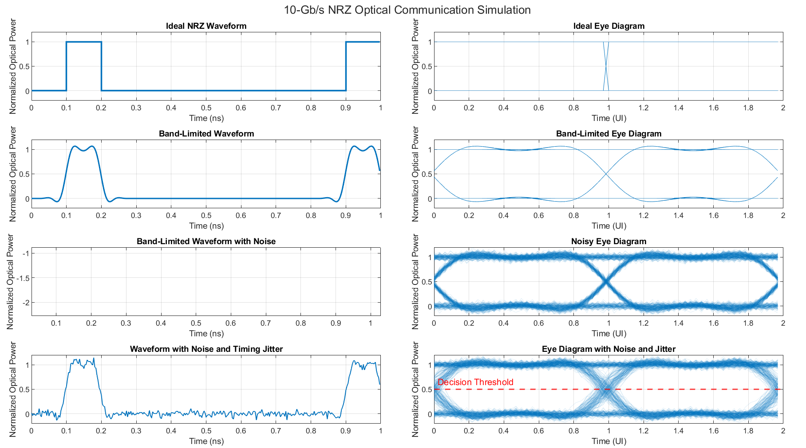

Vertical axis
The vertical axis represents signal amplitude. In an optical eye diagram, it may represent optical power.
If the optical signal has passed through a photodetector, the vertical axis may instead represent electrical voltage or current.
Learn how an eye diagram reveals noise, timing jitter, bandwidth limitations, intersymbol interference, and the reliability of a high-speed optical link.
An eye diagram is a visual tool used to evaluate the quality of a high-speed digital communication signal. It helps engineers judge how reliably a receiver can distinguish binary 1s from binary 0s and determine the best time to sample each bit.
It is called an eye diagram because the opening formed by the overlapping waveforms resembles a human eye.
In an intensity-modulated optical link, a binary 1 is represented by a higher optical-power level and a binary 0 by a lower optical-power level.
The zero level does not necessarily mean zero optical power. A real laser may continue emitting some light while transmitting a binary 0.
An eye diagram begins with a long received waveform containing many 1s, 0s, and transitions.
The waveform is divided into short sections—commonly two bit periods long. These sections are aligned to the bit timing and overlaid in the same display window.
The overlapping sections include the possible signal behaviors:
Hundreds or thousands of waveform sections may occupy the same time window. The resulting pattern does not show one particular bit sequence; it summarizes the behavior of many transmitted and received bits.
The vertical axis represents signal amplitude. In an optical eye diagram, it may represent optical power.
If the optical signal has passed through a photodetector, the vertical axis may instead represent electrical voltage or current.
The horizontal axis represents time, commonly expressed in unit intervals, abbreviated as UI.
For an NRZ signal, one UI is equal to one bit period.
The bit period is calculated from the bit rate:
Tb = 1 / Rb
At 10 Gb/s:
Tb = 1 / (10 × 109) = 100 ps
Therefore, 1 UI = 100 ps, and a two-UI eye diagram displays 200 ps of signal time.

An ideal NRZ signal changes instantaneously between its low and high levels. It has no noise, timing jitter, bandwidth limitation, dispersion, or intersymbol interference.
Its upper rail represents consecutive binary 1s, its lower rail represents consecutive binary 0s, and its vertical lines represent instantaneous transitions.
In an ideal eye diagram:
No physical optical system produces a perfectly ideal eye. The ideal eye is a reference that helps us understand how real impairments affect the received signal.
The receiver compares the sampled signal with a decision threshold.
A sample above the threshold is interpreted as a binary 1. A sample below the threshold is interpreted as a binary 0.
For ideal normalized levels of 1 and 0, the midpoint threshold is:
Decision threshold = (1 + 0) / 2 = 0.5
In a real receiver, the optimum threshold may differ from the midpoint when the two levels have unequal noise or probability distributions.
The safest sampling point is normally near the horizontal center of the eye opening.
At this location, the signal is farthest from the transitions and has had the most time to settle at the one or zero level.
Sampling near a crossing is risky because even a small amount of timing jitter can move the sample to the wrong side of a transition.
Eye amplitude is the difference between the average one level and average zero level:
Eye amplitude = μ1 − μ0
For an optical signal, the related quantity is optical modulation amplitude:
OMA = P1 − P0
Eye amplitude describes the separation between the average signal levels. It does not by itself include noise or rail thickness.
Eye height is the clear vertical opening between the one-level and zero-level distributions at the sampling time.
Unlike eye amplitude, eye height includes the effects of noise and other signal-level variations.
One common statistical estimate is:
Eye height = (μ1 − 3σ1) − (μ0 + 3σ0)
The exact eye-height definition may depend on the instrument or communication standard being used.
Eye width is the clear horizontal interval between the signal-transition regions. It is measured at a defined amplitude, often near the decision threshold.
It represents the amount of time during which the receiver can sample the signal reliably.
An ideal NRZ eye has a width of approximately 1 UI. Timing jitter and slow transitions reduce the eye width.
Noise margin is the vertical distance between the decision threshold and the nearest valid signal boundary.
Separate noise margins exist for the one and zero levels. The smaller value is the limiting noise margin.
For ideal normalized levels of 1 and 0 with a threshold of 0.5, both noise margins are 0.5 normalized units.
Rise time describes how long the signal takes to move from its low level to its high level.
Fall time describes how long the signal takes to move from its high level to its low level.
They are commonly measured from 10% to 90% or from 20% to 80% of the total signal amplitude.
Finite rise and fall times produce sloped or curved transitions. Slower transitions occupy more of the bit period and reduce the eye width.
Crossing-time jitter is the horizontal variation in the times at which rising and falling transitions cross a specified reference level.
The reference level is commonly placed near the midpoint between the one and zero levels.
The term zero crossing refers to this transition crossing level. It does not necessarily mean zero optical power.
A rectangular digital signal contains many frequency components. Limited transmitter, channel, receiver, or oscilloscope bandwidth removes some of the high-frequency content needed to reproduce sharp transitions.
This produces slower edges, curved transitions, ringing, and a smaller eye opening.
Intersymbol interference, abbreviated as ISI, occurs when one bit affects neighboring bit periods.
If the signal has not settled before the next bit arrives, its shape and amplitude can depend on the surrounding bit pattern.
These pattern-dependent differences produce multiple paths through the eye and reduce both eye height and eye width.
Random amplitude variation appears as vertical thickness or fuzziness along the upper and lower rails.
Possible sources include:
Amplitude noise or level variation is more precise than “amplitude jitter,” because jitter normally describes timing variation.
Timing jitter is the variation of a signal transition from its expected time.
In an eye diagram, timing jitter appears as horizontal spreading around the crossing points.
Jitter may be stated in seconds or as a fraction of one UI.
At 10 Gb/s, 1 UI = 100 ps. Therefore:
0.03 UI = 3 ps
Fiber dispersion broadens optical pulses as they propagate through the fiber.
Broadened pulses can overlap neighboring bit periods, increasing ISI and closing the eye vertically and horizontally.
The displayed eye includes the response of the complete measurement path.
The photodetector, optical-to-electrical converter, cables, connectors, and oscilloscope must have suitable bandwidth.
Otherwise, the measurement system may make the eye appear more closed than the original signal actually is.
At the sampling time, a transmitted 1 is detected incorrectly if noise or distortion pushes its sampled value below the decision threshold.
A transmitted 0 is detected incorrectly if its sampled value rises above the decision threshold.
Timing jitter may also cause an error by moving the sampling instant too close to a transition.
As the eye closes vertically or horizontally, the probability of an incorrect decision increases.
An eye diagram provides a visual summary of signal integrity, but it does not directly count bit errors.
A large, open eye generally suggests a lower probability of error. However, it does not prove that a specified bit-error rate has been achieved because rare errors may not appear in the displayed traces.
Engineers commonly use both methods for complete optical-link validation.
A larger vertical opening provides more separation between binary 1 and binary 0 and greater tolerance to amplitude noise.
A larger horizontal opening provides more freedom in choosing the sampling time and greater tolerance to timing uncertainty.
A wide, tall, and clean eye indicates better signal quality.
Eye height and noise margin describe tolerance to amplitude variation. Eye width and crossing-time jitter describe timing margin. Rise and fall times describe transition speed.
A BER test is still required to verify the actual error performance of the optical link.